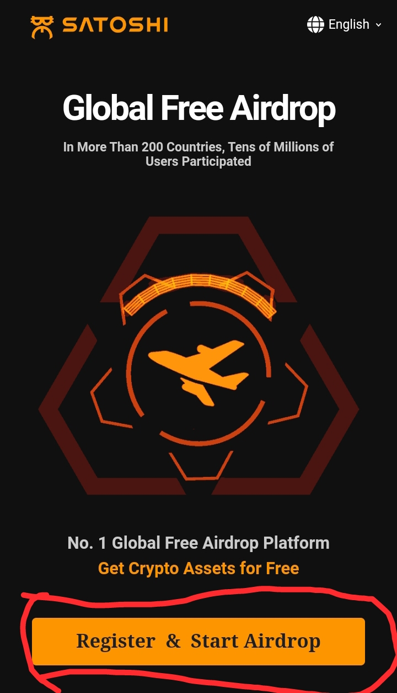
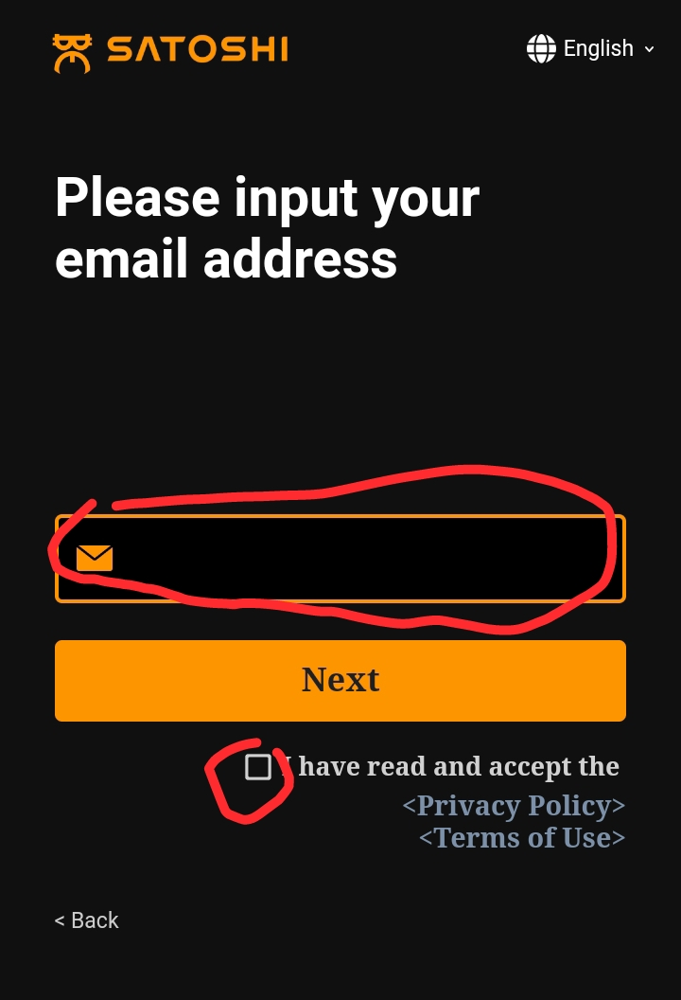

Satoshi Mining
Wadanda Sukayi mining din CORE sun samu alheri. Duk wanda ya tara guda 100 ma yasamu $600 wanda yayi dai dai da N448,800 a farashin da CORE yaje na ranar listing, to me kuke tunani zuwa gaba abinda farashin zai koma? A da ana Mining din core a kyauta yanzu kuwa sai ka siya, wanda Duk daya darajar sai da ta kai $6 kimanin N4,488. Wannan ba abin mamaki bane a crypto, nan gaba ba'a san nawa yakai ba, domin bitcoin ma sai da yakai Milyan Ashirin da hudu (N24,000,000), amma lokacin da akayi launching dinsa shekara goma da ta wuce ko dala daya bai kai ba.
Idan karasa waccan damar ga wata da suke shirin kawowa. Application din satoshi so suke su mayar dashi wajen bada kyaututtuka da mining kala kala kuma ya zama lamba daya a duniya baki daya.
Kuyi register domin kwashewa da samun wannan ganima kyauta.
Yadda ake register:
Ku shiga wannan link din.
https://www.btcs.love/invite/1wk8e
zai bude kamar haka, sauku danna register and start airdrop

zai bude kamar haka, sai kusa email address dinku, ku danna wannan abin dana kewaye.

zaku ga inda aka sa verification code, sai ku rubuta lambobin da aka rubuto. Daga nan zasu tura code a
email dinku kuyi copy kuzo kusa, sai ku kirkiri password.
Duk abinda ba a gane ba sai a tuntube ni ta whatsapp whatsapp.